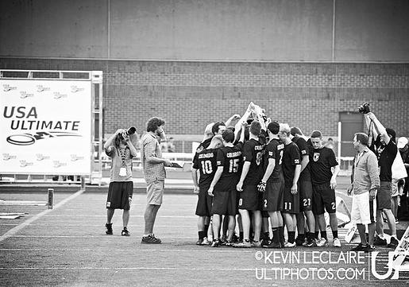
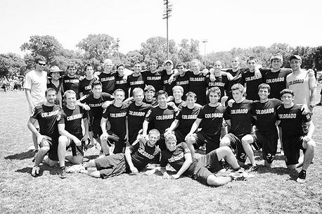
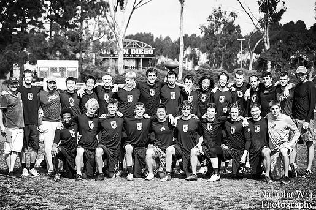
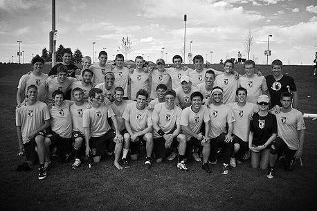
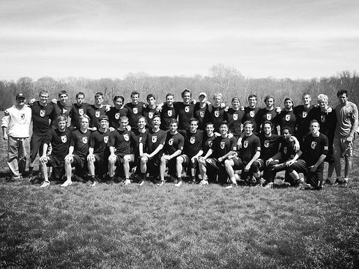

"The strength of the flock is the bird.
The strength of the bird is the flock."
A Team & A Family
We are CU's Men's Ultimate team. Officially, we're just one of 32 club sports teams on campus.
But we are more than just a team. Every year we get more competitive and become a stronger family. We have gone to the National Championships 18 years in a row, which is the longest active streak in College Ultimate.
We recognize that in order to stay competitive in the future, it is our duty to develop all the players that come through our program. The A-team isn’t for everyone but our B-team may be a perfect place for you to develop and hone your skills. In fact, some of our best players and captains started their careers on the B-team!
We are meritocracy. Many of us played ultimate in high school. Others haven’t played at all. It doesn't matter. Once you join us, all that matters is your performance, not your history.
We are committed to the ultimate community in Colorado as many of us played Colorado high school ultimate. In 2014, we put on the first annual Birds of a Feather hat tournament for high-school players. In addition, many of us coach and run clinics in the summer as part of the Grass Roots Ultimate Program for Youth and also play on local Club teams.
What does a complete year look like with us? Well, we hold tryouts for our A-Team throughout the fall semester. In the spring, we travel and play at USA Ultimate sanctioned tournaments and in April and May, we compete in the Series.
We are the flock.
The Life of a Birdie
On Tuesday, Thursday and Friday nights, you will find the Birdies on campus: Kittredge Fields, Business Fields, Athletic Fields and the Rec Center. This is where we practice but our practice schedules vary.
On a handful of weekends in the fall, the Birdies flock to Kansas, Nebraska and Missouri to test out their rookies and gauge the regional competition.
On weekday mornings, you can find some of us at the Cheetahfit Training Center or the Rec Center.
On Sunday mornings, you can find us at Scott Carpenter Park, running hill workouts.
In the spring, we are in San Diego, Phoenix, Palo Alto, Myrtle Beach and Austin. We travel and compete at the best tournaments.
Over Memorial Day Weekend, we are hopefully competing at Nationals (Madison, Cincinnati, or somewhere in the mid-west).
Our Past PerformanceResults (1998-2014)1998 - Quarterfinals1999 - Quarterfinals2000 - Semifinals2001 - National Runner-Ups2002 - Pre-Quarters2003 - Semifinals2004 - National Champions2005 - National Runner-Ups2006 - Quarterfinals2007 - National Runner-Ups2008 - Semifinals2009 - National Runner-Ups2010 - Pre-Quarters2011 - Semifinals2012 - Pre-Quarters2013 - Pre-Quarters2014 - National Champions |
 |
|  |  |
|  |  |